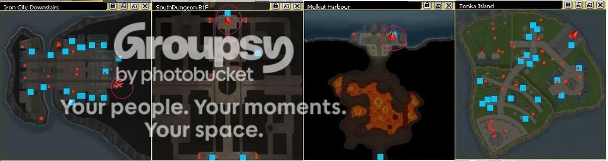

หน้า 1 จากทั้งหมด 1
Demon Steel หาจากไหน -0-

โพสต์แล้ว:
ศุกร์ 28 มี.ค. 2008 9:05 amโดย ECO
ตามหัวข้อเลยคับ
ทำยังไง ช่วยบอกทีคับ
โพสต์แล้ว:
ศุกร์ 28 มี.ค. 2008 11:25 amโดย ECO
:oops: Demon Steel มีดรอปจาก Tatarebe Rock ค่ะ
Tatarebe Rock หาได้ที่ Map : Mulkut Harbour ทางเข้า (ดังภาพค่ะ)

Credit ภาพ : [GM]Paul ค่ะ
โพสต์แล้ว:
ศุกร์ 28 มี.ค. 2008 2:10 pmโดย ECO
เวลาอยู่ในนั้นจะทำให้เลือดลดตลอดเวลานะครับ
ปล.Demon Steelหายาก :cry:
โพสต์แล้ว:
ศุกร์ 28 มี.ค. 2008 3:43 pmโดย ECO
*หิน light steel - Demon Steel - Flint หาจากห้องหินดันใต้ ชั้นแรก วาร์ปบนสุด
ทั้งห้องไม่มีมอนมีแต่หิน.. แต่ต้องใช้เวลาตีนะ ทนเอา
ถ้าอยากได้เร็วๆก็ให้ไปรับเควส เมืองใต้ ชั้นล่าน ไม่ใช่ห้องตีบวกนะ อีกห้องนึง
รับเควส ฆ่ามอน:
* ชั้น1 จะได้ flint
* ชั้น2 ได้ demon steel
* ชั้น3 ได้ light steel
ป.ล. ชั้น 2 กับ 3 ไม่รู้จำสลับป่าวนะ ถ้าสลับโทดที
(ทำ 1 เควส ต่อ 1 ก้อน / 10 เควสก็ 10 ก้อน)
แนะนำให้เอาเพื่อนไปเยอะๆ รับตี้เดียวกัน เวลาไปส่งเควสจะได้ ได้ทีละหลายก้อน..
โพสต์แล้ว:
เสาร์ 29 มี.ค. 2008 3:13 amโดย ECO
ขอบคุณคับ ^-^ รับเควสมานานละแต่ทามม้ายได้ซักที - -